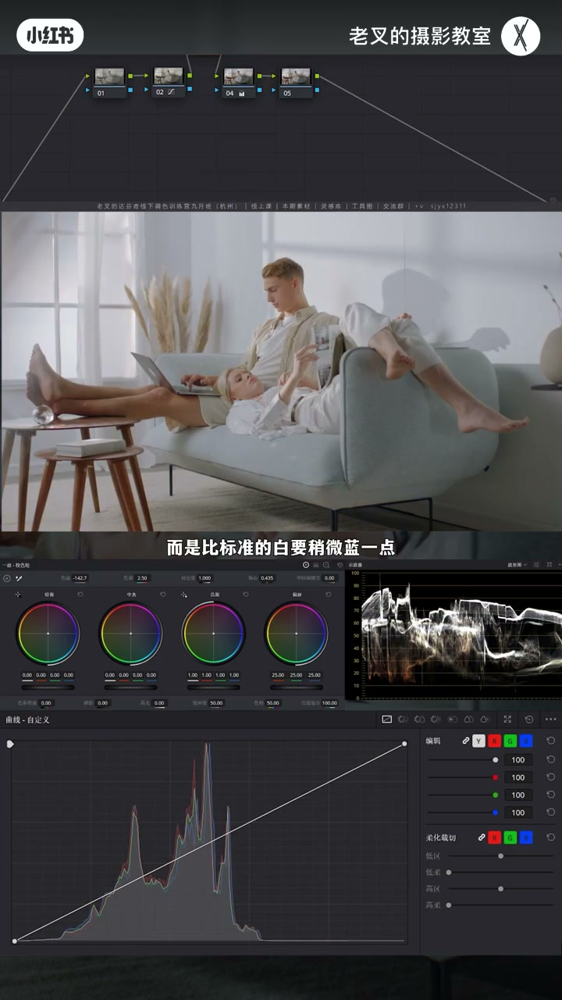
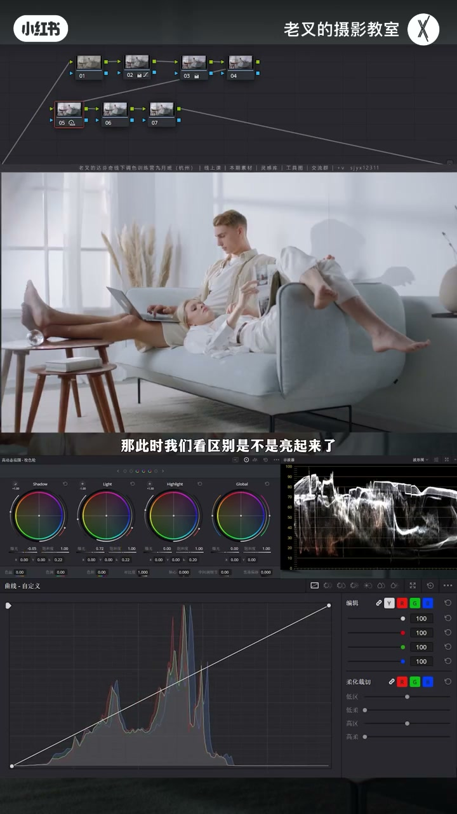
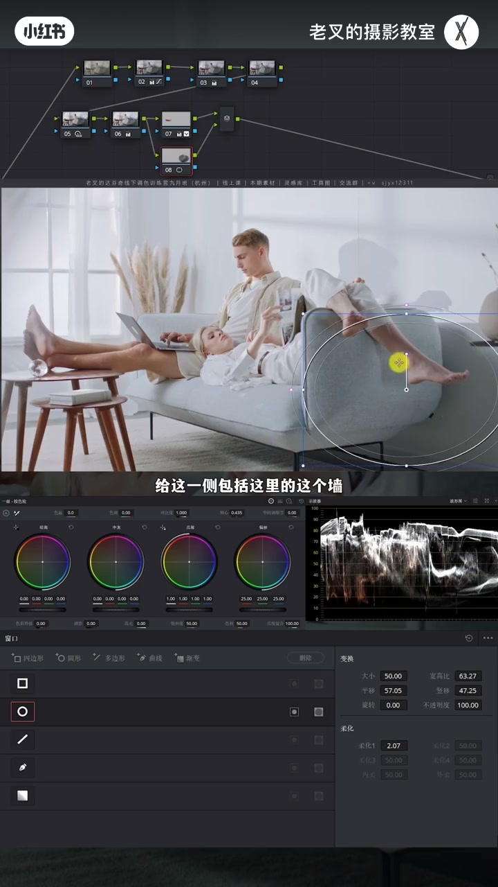
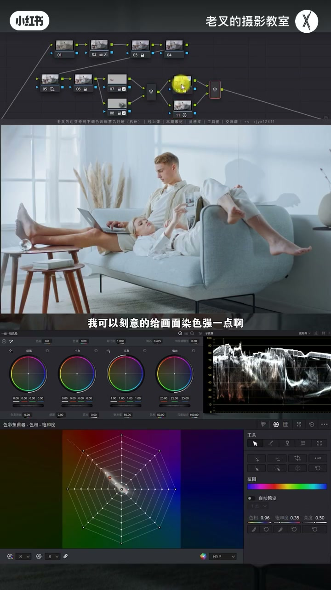
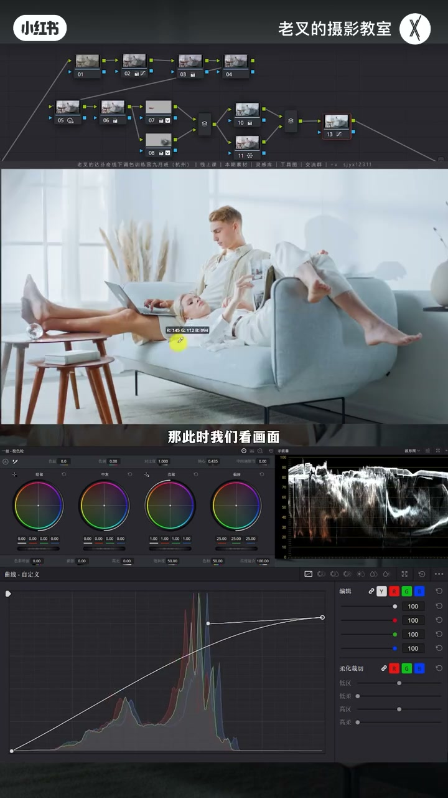

内容要点
干净通透五步：白平衡略偏蓝于标准白；通透≈雨后硬光≈更强反差，用 HDR 展亮压 Shadow；要再亮先压暗部再提阴影滑块护层次；并行提该亮、压该暗引导视线；风格染色轻量并用蜘蛛网护肤；最后柔和对比度提中灰亮部同时护高光。
知识结构
校正黄闷；白比标准略蓝更显干净。
HDR 抬 Light 压 Shadow；再提阴影也不易发灰。
遮罩提腿；并行压沙发背光（限定器避肤）。
可略青绿风格；并行蜘蛛网找回肤色。
样条线提中亮护高光；暗部同理不塌反差。
干净靠白平衡略偏冷；通透靠先拉开反差再提亮。分区让该亮该暗明确，染色宁弱；柔和对比度是安全的二次曝光整形。
00:00-01:06干净：白平衡略蓝于标准白
还原后曝光不足偏黄闷。单独节点把色温往冷、色调略平。力度不是找标准白，而是比标准白略蓝——医院/研究室镜头常故意略蓝更显干净。对比标准白墙 RGB 接近等值与现结果差异很大。

01:06-02:59通透：雨后硬光逻辑 → HDR 再提亮
通透联想雨后晴天：空气净、光更硬、反差更强。HDR 抬 Light、小幅降 Shadow；比一级亮/暗轮更好补救——环境高光过亮还可用 Highlight 收回。客户要再亮：先再压 Shadow（勿死黑），后节点提阴影滑块并可略降高光滑块。先拉开暗部再提亮，反差几乎不塌；只提阴影会收缩发灰。

02:59-04:16该亮提、该暗压，引导视线
男生腿不够亮：遮罩微提（需简单跟踪）。沙发里侧背光与墙：Option+P 并行压暗；可用 Shift+H 突出显示+限定器选肤再反转避开脚。四节点开关：整体亮且层次足，视线离开背光沙发。

04:16-05:14轻风格染色 + 蜘蛛网护肤
可以沙发青蓝为主色略降色温色调走青绿，力度宜弱。肤色受影响则并行蜘蛛网纠色相。演示可故意染狠再找回——实战勿让高光暗部堆杂色。

05:14-07:13柔和对比度：提中亮、护高光
波形已很亮时曲线猛提易让窗户过曝。可编辑样条线：点高光端出波谷，上提波谷再降高光端——中灰偏亮提亮而最亮几乎不动。暗部同理：降暗部波谷、抬暗部端，背光微提且波形反差不塌。五要点素材可练；与还原对比通透干净。

完整转录（288段）
以下文本由 Whisper medium 模型自动转录，可能存在少量识别误差，已尽可能修正。
怎么让你的画面干净又通透
我相信很多朋友在做白平衡项目的时候
一定会遇到类似的问题
就比如说我们这个画面
给它简单还原之后
我们能够看到
画面整体曝光是不足的
还有点偏黄
非常闷
对不对
第一步要解决的就是
先让白平衡调整正确
那画面既然发黄
我们就给它矫正回来
我再来一个节点操作
按理来说
它应该是跟2号节点一起来的
但是我这里为了体现区别
所以我就单独建了一个节点
我们在新建的这个节点中
把色温给它往冷的方向走一点
色调也可以考虑往平的方向走一点点
好
我就到这里差不多
我们来看
这样的效果是不是舒服多了
不知道大家有没有注意到一点
我调整色温的力度
其实不是去找标准的白
而是比标准的白要稍微蓝一点
这个是标准的白
我们看到此时在背景中
受光面的白墙上
它的RGB3值几乎是一样的
而这是我们现在的结果
差别是非常非常大的
对不对
调蓝了之后
你会发现画面变得更加干净
这就是为什么我们在调医院
或者研究室之类的镜头时
会刻意的稍微调蓝一点点
因为这能够让它显得更干净
好
我们继续来
初步调整之后
我们接下来要考虑的
就是如何让画面更通透
所谓通透
很简单的一个理解
大家想一下
什么时候的空气是最通透的
一定是雨后的晴天是最通透的
这个时候空气最干净
太阳光穿透的能力也更强
所以光会更硬
所以更通透的画面
必然是反差更强的
此时我们就可以建立几个节点
拉到第二排
在第二排的第一个节点中
利用HDR色轮的Light色轮
来稍微提高一点
高光的部分的曝光
再小幅的降低一点点
Shadow色轮的曝光
此时我们看区别
是不是亮起来了
对吧
那为什么这个时候
不用一级校色轮的高光
和暗部色轮来操作呢
如果说我们此时用Light色轮
把主体体亮的效果比较到位了
但是稍微让环境的高光
过亮了一点点
那么我们还能用Highlight色轮来补回来
如果是用一级校色轮的亮部色轮
操作的话
那就不太容易去补救了
然后你说
哎呀 我觉得这个画面还不够亮
客户希望我再亮一点
那该怎么办呢
这个时候我们先不急
先再次降低一点Shadow色轮的曝光
要注意不要死黑了
然后在后面跟一个节点提高
一级校色轮中的阴影滑快的曝光
可以考虑稍微降低一点
高光滑快
来防止高光太亮了
那此时我们画面是不是就提亮了
对吧
这就是第三点
我们要提亮一个画面
最怕的就是画面层次变弱
从而发挥
而我们先拉开反差
特别是要让暗部足够暗
然后再去提亮
那此时就能够让反差保持不变
或者小福建地的前提下
让画面变得更亮
如果我们不做5号节点的操作
单纯提高阴影滑快的话
是不是在波形图上
包括画面中也看得出来
反差降低了
对吧
因为它的内容在收缩嘛
画面就会发灰
但如果说我们做了5号节点
我们可以把这两个节点一起开关来看
反差几乎保持不变
因为暗部还停留在该载的一个高度
整体的一个反差
不仅没有降低
反而稍微有一点点提高了
所以这样的一个提亮方式是最安全
而且效果也更好
不会剩掉我们整体的一个层次
再然后我们就要开始去找画面
哪里还不够亮
比如说男生的腿
那我们可以在后面来个节点
给男生的腿画一个遮罩
然后稍微给它提亮一点点曝光
不需要太多
当然了这个遮罩要跟踪
这跟踪还是非常简单
我就不多说了
我们提亮好了之后
还要去找哪里不够暗
比如说沙发里侧的背光面
那对于这一侧
我们还得要建立一个
并行节点
按住 Alt 加 P
或者是 Option 加 P
给这一次
包括这里的这个墙
也给它画一个遮罩
我们要对这里稍微压一点
如果说你想避开脚的话
我们可以利用信电器
按住 Shift 加 H
打开突出显示
用信电器选出皮肤
然后点击信电器左上角
这一排工具栏中最右边这个按钮
把这个信电器的选区给它反转了
那这样我们就可以避开脚的位置了
对于这个区域中
我们要给它稍微压暗一点点
再降低一点曝光
我觉得到这里就差不多了
这一步就是第四点
我们要让画面整体增加质感
一定要注意
让画面中该亮的亮
该暗的暗
也就是这两个并行节点
我们能看到画面的变化
是不是感觉视觉中心也被引导
我们不会再去关注这一次
沙发的背光面
而会下意识的往人物这一侧去走
对吧
我们也可以把这四个节点
一起开关看效果
是不是整体体量的同时
层次依旧很足
那画面越发的不错了
接下来我们可以考虑给它做点颜色
如果说你想要一点点风格化
比如说
我们以这个沙发的青蓝色
作为主色来改变整个画面的话
那么我们可以在后面更一个节点
然后稍微降低一点色温
也降低一点点色调
让它稍微青绿色一点点
我觉得这个效果其实还蛮不错的
可以给画面带来一点点的风格化
当然这可做可不做
如果你做了这个事情
并且你让肤色也受到太多的影响
那么可以利用这个技巧
在这个染色的节点下
建立一个并行节点
然后利用蜘蛛网
来把肤色给它找回来就行
这个效果
因为我们给画面染色力度很弱
我可以刻意的给画面染色强一点
假设是这样的一个结果
那么肤色一定会变得特别特别怪
那这个时候
我们在并行节点下面这个节点中
把肤色给它色相调回来就可以了
那此时就算我们把画面染色
染得这么过
肤色也能够相对独立
基本上不会受到太多的影响
当然我们不会给画面做这么强的染色
我觉得到这个程度就差不多了
染色的力度千万不要太大
特别不要让高光和暗部有太多的杂色
最后一个点
也就是第五个要点
我们如果此时感觉画面
还想要再一次的体谅
那该怎么办呢
画面中其实我们看播信图
已经有大部分的内容
已经非常非常亮了
所以此时我们不论做什么样的行为
不管是提高哪一块
都有可能让高光溢出
比如说用曲线
我们让高光这一端往上提
人物是亮了
画面也更讨喜
可是窗户位置过曝了
有没有什么办法能够快速的提亮
中灰偏亮部分的曝光
同时还不让高光过曝呢
有的
我们可以打开曲线右角三个点的设置
然后勾选可编辑的样条线
点击一下高光这一端的小圆点
它就会出现一个波感
我们把这个延伸出来的波感往上一提
画面变亮了
对不对
然后再把高光这一端给它往下降
这个波感可以稍微再多提一点点
此时我们看画面
画面提的更亮了
对不对
但是最亮的这一部分
它的曝光基本没受到影响
如果说你想让它再暗一点的话
可以把右边这一端往下再降一点
画面就能够在提亮的同时保护住高光
我们此时目的就达到了
如果说你想让暗部也变亮
但是不希望整体的反差降低层而发挥
那么我们也可以点击暗部的这一端
它也会延伸出一个波感
把暗部的波感给它往下降
然后再提高暗部这一端的曝光
波感再加一点点
我们此时看到
在背光面的位置
原本是非常暗的
但是我们给它稍微提亮了一点点
但整体的一个画面反差
我们看波形图基本上没有受到任何的影响
甚至你想让它增加一点反差也可以
你可以通过改变这个波感的力度
这就是柔和对比度
我们可以利用柔和对比度
在保证画面反差不受到影响的前提下
能够去压缩高光和暗部
让画面不会有特别扎眼的部分
同时也可以自定义的
再次的去强化画面曝光
比如说你想要再亮点
当然可以
它的高光基本上不会受太多的影响
你想要再暗一点
当然也可以
那这五个要点
大家可以把素材领取过去之后
尝试一下
效果是非常直观的
我们可以再次看一下对比
这个是还原后的画面
这是我们最后调整后的画面
效果还是挺好的对吧
那讲到这里
如果绝对你有帮助的话
还希望多多赞联
好了
这期就到这里
886